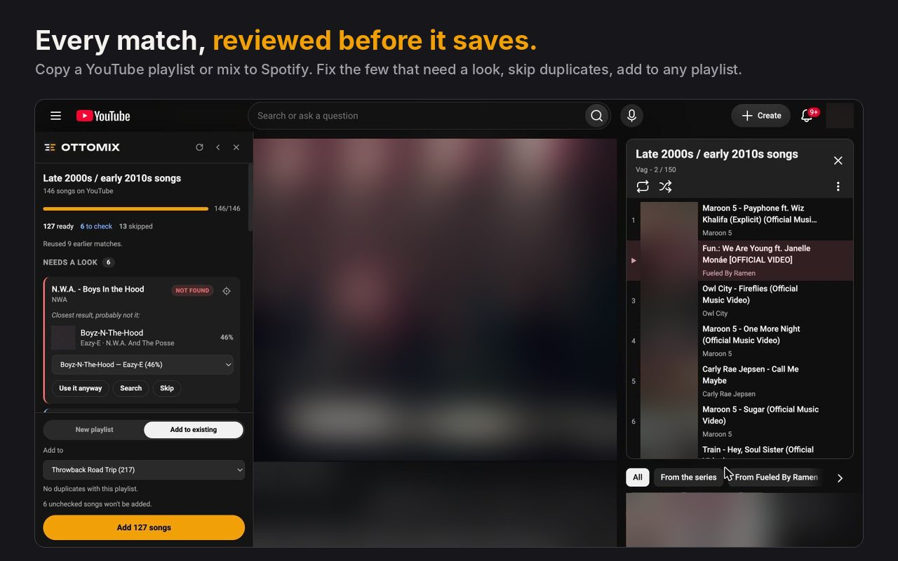
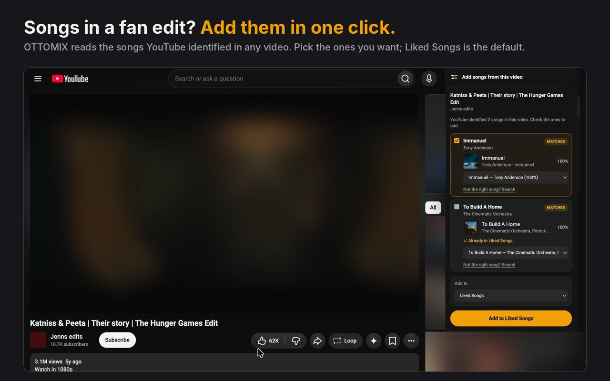
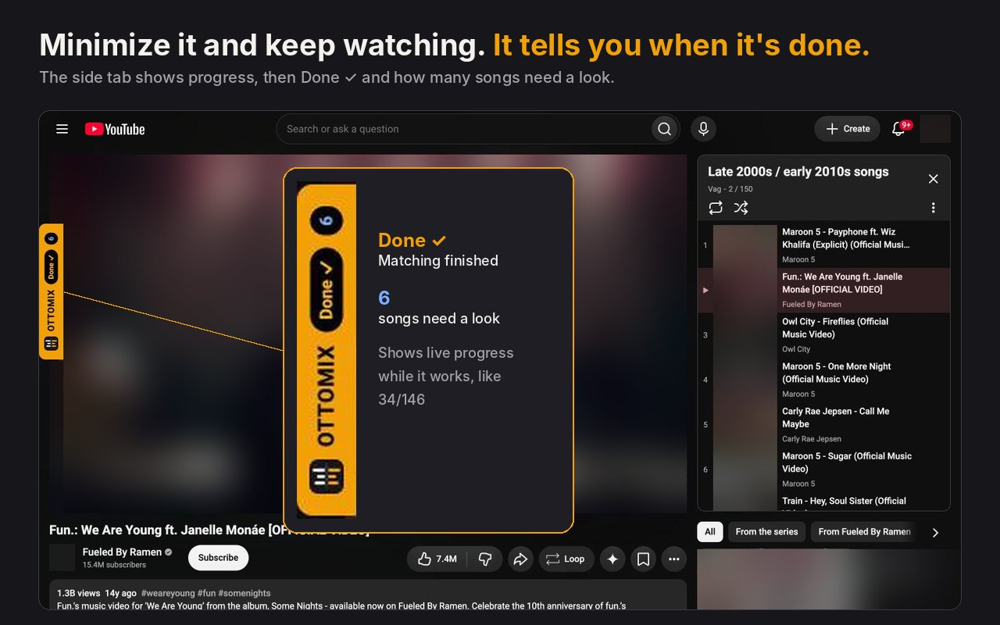

Your YouTube playlist, mirrored in Spotify.
OTTOMIX copies a YouTube playlist or mix into a Spotify playlist with one click. You check the few songs it isn't sure about before anything is saved.



Setup · about 5 minutes
Connect OTTOMIX to your Spotify
OTTOMIX talks to Spotify through a small developer app that you create on your own Spotify account. It's free and takes a few minutes. Your songs and your login never pass through anyone else's servers.
Before you start: Spotify only lets developer apps run when the account that owns the app has Spotify Premium.
Install OTTOMIX and open it
Add OTTOMIX from the Chrome Web Store, then click its icon in the toolbar (pin it from the puzzle-piece menu so it's easy to find). The window that opens shows a Redirect URI with a Copy button. You'll need it in the next step.
Create your Spotify app
Go to the Spotify developer dashboard, sign in, and choose Create app.
- Name and description: anything, for example "My OTTOMIX".
- Redirect URIs: paste the one from OTTOMIX. It looks like https://<id>.chromiumapp.org/
- Which API: tick Web API, agree to the terms, and save.
Paste your Client ID
Open the app's Settings in the dashboard, copy the Client ID, paste it into OTTOMIX and click Save. OTTOMIX never asks for a Client Secret.
Connect Spotify
Click Connect Spotify and approve the permissions. OTTOMIX asks to read your playlists and Liked Songs (to avoid duplicates) and to add songs to them.
Convert a playlist
Open any YouTube playlist or mix and click Convert to Spotify. The first time, you'll be asked to unlock playlist conversion for a one-time $2.99. Adding single songs from a video stays free.
Good to know
- Can friends use my Spotify app?
- Yes, up to five Spotify accounts per app, including yours. Add their Spotify email under User Management in your app's settings and give them your Client ID. Each person still installs OTTOMIX themselves.
- I paid on another computer.
- Click Already paid? Log in in the OTTOMIX window and enter the email you paid with. You'll get a login link.
- How long does a big playlist take?
- Around 5–10 minutes for 1,000 songs. OTTOMIX paces itself to stay inside Spotify's limits. If Spotify asks it to wait longer than two minutes, it pauses and you can resume later.
- "Spotify rejected the redirect URI"
- The Redirect URI in your Spotify app has to match the one in the OTTOMIX window exactly, including the slash at the end.
- "This Spotify account isn't on your app's user list"
- You're logged in to Spotify with an account that isn't the app's owner. Add it under User Management, or log in with the owner account.
Purchase terms
What the $2.99 covers
The unlock is a one-time purchase of OTTOMIX's playlist and mix conversion as it works when you buy it. It isn't a subscription, and it doesn't include a promise of future updates or ongoing service.
- OTTOMIX depends on YouTube and Spotify, which change their sites and services without notice. We'll do our best to keep OTTOMIX working through those changes, but we can't guarantee it will keep working indefinitely.
- Updates we do release are free for everyone who has unlocked OTTOMIX.
- Adding single songs is free, so you can see how OTTOMIX works with your Spotify before you buy.
Privacy policy
What OTTOMIX does with your data
Effective November 1, 2026
OTTOMIX is a Chrome extension. It has no servers of its own, shows no ads, and doesn't use analytics. Everything it keeps stays in your browser.
What it reads
- On YouTube pages where you use it: video titles, channel names, playlist names, and the songs YouTube lists in a video's Music section. It reads these only to find the same songs on Spotify.
What it sends, and to whom
- Spotify: searches built from those song titles, and the playlist changes you ask for, using your own Spotify login and developer app. Spotify's own privacy policy applies there.
- ExtensionPay (extensionpay.com), which handles the $2.99 unlock: a random ID for your install and whether you've paid. If you buy or log in, ExtensionPay gets your email. Card payments are processed by Stripe; OTTOMIX never sees your card details.
What it stores on your computer
- Your Spotify Client ID and login tokens.
- Your settings, such as whether the YouTube buttons are shown.
- Remembered matches between YouTube videos and Spotify songs, so repeats don't need a new search. Unsure matches expire after 3 days, confirmed ones after 30.
- Whether playlist conversion is unlocked.
What it doesn't do
- It doesn't sell, share or rent your data, or use it for advertising.
- It doesn't read your browsing history or any site other than YouTube, Spotify's login page and ExtensionPay's pages.
- It doesn't play music or keep copies of songs.
Deleting your data
- Clear app cache in the OTTOMIX window removes remembered matches and any playlist in progress.
- Disconnect removes your Spotify login from the extension. You can also revoke access at spotify.com/account/apps.
- Uninstalling OTTOMIX deletes everything it stored.
Changes and contact
If this policy changes, the new version will be posted here with a new date. Questions go to the developer email shown on OTTOMIX's Chrome Web Store page.